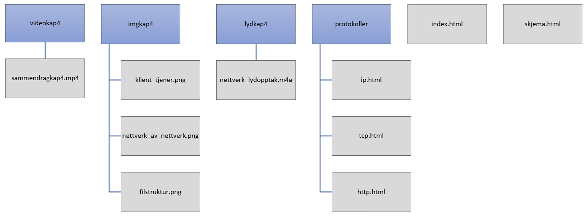

Figur 1: Internett beskrives som et nettverk av nettverk. (Illustrasjon)
Her kan du høre en nærmere beskrivelse om nettverk:
Figur 2:
En klient (A) sender en forespørsel til en tjener (B) om å få åpne et bilde.
Tjeneren deler opp bildet i pakker og sender dem tilbake til klienten.
| Protokoller | Lenke til beskrivelse |
|---|---|
| IP | beskrivelse |
| TCP | beskrivelse |
| HTTP | beskrivelse |
Her er et sammendrag av kapittel 4:
Klikk her for å gi tilbakemelding
på denne nettsiden.
Figur 3: Illustrasjon av filstrukturen til denne oppgaven.
